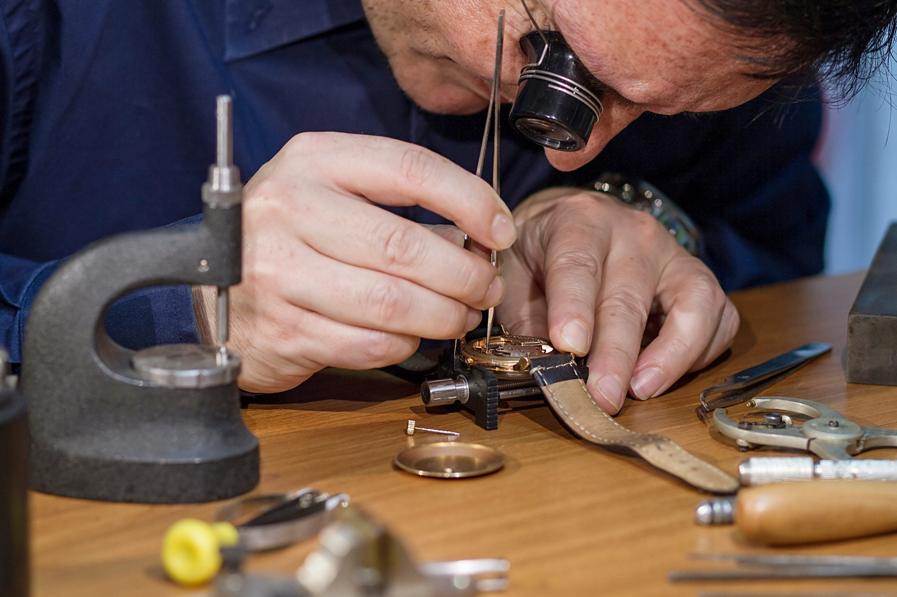

ネット通販や他店で購入された時計も歓迎します。1級時計修理技能士が在籍する提携工房と連携し、正規店と同じ水準の修理を、費用を抑えてお受けします。お見積りは無料です。
各店の営業時間内・年中無休（施設の休館日を除く）／予約不要・持ち込み点数の制限なし・お見積り無料


いずれも、3店舗でご相談をお受けしています。

通販品、他店で買った時計、海外ブランド、古い機械式の時計まで、購入したお店を問わずお受けしています。どこで買ったかではなく、どう直せるかから考えます。どんな時計も、まずは一度お持ちください。


当店は日本ゴールドチェーンに所属し、1級時計修理技能士が在籍する提携工房と連携しています。メーカーの正規修理と同じ水準の作業を、費用を抑えてお受けします。

ゆめタウン福山店・天満屋福山店・フジグラン神辺店の3店舗でお受けしています。お買い物のついでにお立ち寄りください。1913年に福山で創業し、地域で時計と宝飾品を扱ってきました。
各店の営業時間内・年中無休（施設の休館日を除く）
「どこに頼めばいいか」で迷ったら、この表をご覧ください。
| 三村時計店 | メーカー 正規修理 | 一般の 量販店 | |
|---|---|---|---|
| 他店・通販購入品 | ◎ | △ | ○ |
| 料金 | 適正 | 高い | 安い |
| 技能士の対応 | ◎ | ○ | × |
| 相談のしやすさ | 対面 | 郵送 | 対面 |
| 納期の目安 | 早い | 数週間〜 | まちまち |
※ 修理内容により異なります。詳しくは店頭でご確認ください。
現物を拝見して、料金の目安をお伝えします。分解して中を点検すると、外からは見えなかった不具合が見つかることがあります。その場合は、追加のお見積りをお伝えします。【要確認：追加の作業に入る前に連絡して了承をいただくか】


予約はいりません。3店舗のどこでもお受けしています。
3店舗のいずれかに、時計をお持ちください。
状態を拝見し、料金の目安と日数をお伝えします。ご納得いただいてから作業に入ります。
分解・点検で追加の作業が必要とわかったときは、追加のお見積りをお伝えします。仕上がったら、お電話でお知らせします。分解掃除は3〜4週間ほどお預かりします。

国内外のブランド時計から、長く使われてきた古い時計まで、一つずつ構造を確かめて仕上げます。
はい。お見積りは無料です。お預かりの時点の金額は目安で、分解して点検したあとに追加のお見積りが出ることがあります。
購入したお店を問わずお受けしています。どんな時計も、まずは一度お持ちください。
分解掃除（オーバーホール）は3〜4週間ほどお預かりします。電池交換などは【要確認：当日対応の可否】
予約はいりません。各店の営業時間内にお持ちください。3店舗とも年中無休です（施設の休館日を除く）。
お持ちいただく本数に制限はありません。
部品の生産が終わっている場合など、修理が難しい時計もあります。その場合も、なぜ難しいのかをご説明します。
あります。分解して点検すると、外からは見えなかった不具合が見つかることがあり、その場合は追加のお見積りをお伝えします。お預かりの時点の金額は目安としてお考えください。
ご来店時にこの画面をご提示いただくか、「ホームページを見た」とお伝えください。

「これって直る？」の一言からで大丈夫です。お見積りだけでも歓迎しています。
時計の状態をお聞きし、おおよその料金と日数をお伝えします。
各店の営業時間内・年中無休（施設の休館日を除く）
料金や頼む間隔、他店で買った時計の扱いなどをまとめました。

機械式時計は定期的な分解掃除が必要です。費用の目安や、どのくらいの頻度で行うべきかを分かりやすくご説明します。

「電池が切れたまま」になっていませんか？その場でできる電池交換の料金や、注意したい防水時計のポイントを解説します。

購入したお店が分からない、閉店してしまった…そんな時計もご相談ください。当店の対応範囲についてご案内します。

サイズが合わない、劣化してきた革ベルト。素材ごとの交換費用や、長持ちさせるお手入れのコツをご紹介します。

親から受け継いだ時計。動かなくなった古い機械式時計でも、再び動き出すことがあります。
3店舗とも、時計の修理をお受けしています。お近くの店舗へそのままお持ちください。